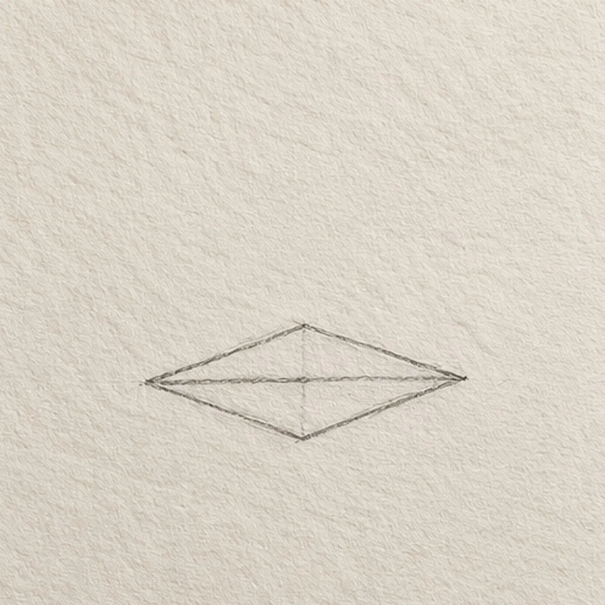
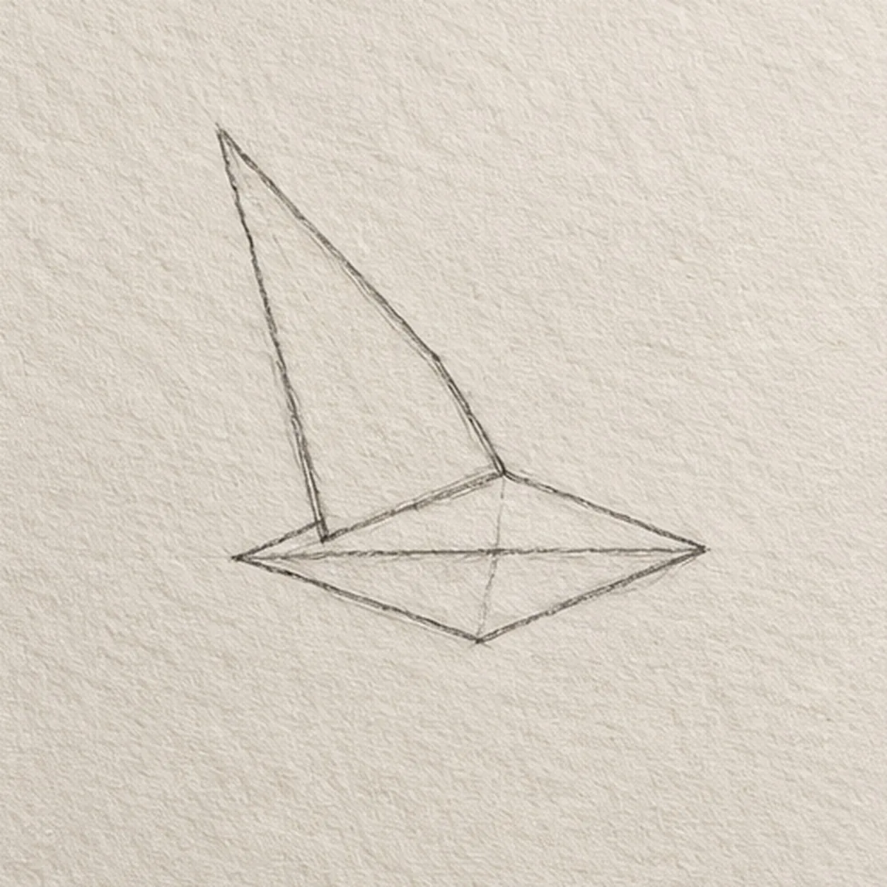
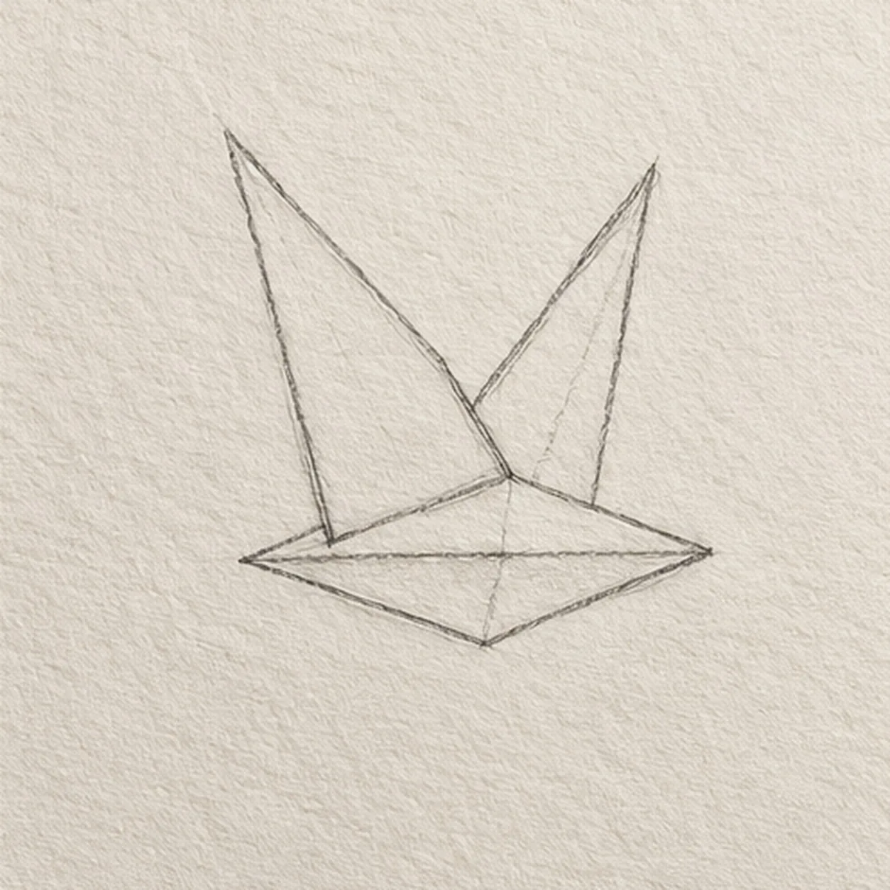
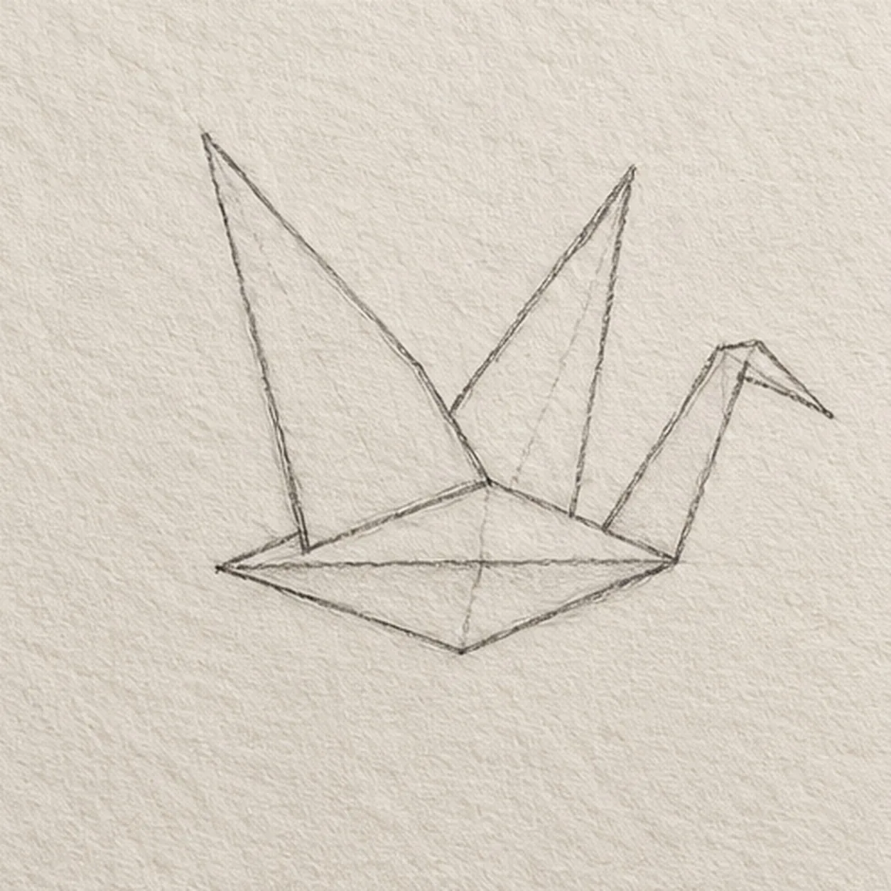
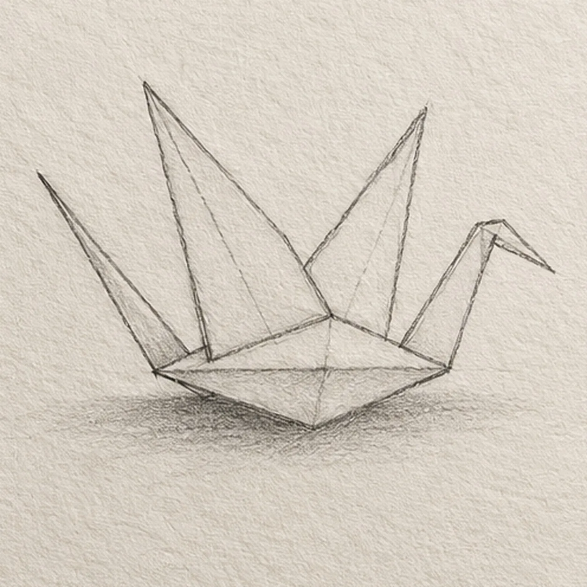

From the archive
Let's draw an origami crane
Treat this as one small practice round: build the subject lightly, notice the shapes, then darken only the lines that help the finished sketch.
-
01

Draw the folded body
Draw a small horizontal kite-shaped folded body at page center, with a pointed left and right end.
Sketch tip: Keep the left and right body tips open for the tail and neck.
-
02

Draw the near wing
From the upper-left edge of the body, lift a broad triangular wing upward and outward, returning its lower edge to the body center.
Sketch tip: Let the near wing meet the body without crossing its center seam.
-
03

Draw the far wing
Behind the first wing, lift a slimmer triangular far wing toward the upper right, meeting the same body seam.
Sketch tip: Keep the far wing slightly slimmer so both wing tips remain separate.
-
04

Draw the neck and head
From the right body tip, angle a slender neck upward and bend its tip down into a short pointed beak.
Sketch tip: Make the beak a short bend at the neck tip, not a separate floating triangle.
-
05

Draw the tail and fold seams
From the left body tip, raise a narrow pointed tail. Follow the faint fold route within each wing, then rub a small graphite shadow below the body.
Sketch tip: The tail attaches at the original left tip; keep the shadow directly under the body.
-
06

Shade the folded paper
Use a soft pencil along the existing fold seams, shade one side of each wing lightly, and deepen the small shadow without adding new contours.
Sketch tip: Leave a light paper edge on each wing so the two folded planes remain distinct.